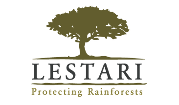

Jsme moc rádi, že jste se zajímáte o problematiku palmového oleje. Věříme, že tím prospějete nejen životnímu prostředí, ale hlavně svému zdraví.
Vložte čárový kód výrobku pod zadní kameru tak aby byl přibližně ve středu obrazovky. Někdy může načtení kódu a ověření palmového oleje chvíli trvat. Ujistěte se, že kamera na kód dobře vidí. Kód by měl být na obraze ostrý a neměl by se lesknout. Pokud se leskne použijte přisvětlení [tlačítko blesku].
Zelený palec nahoru znamená, že výrobek neobsahuje palmový olej.
Červený palec dolu, že výrobek palmový olej obsahuje.
Aplikace ke své činnost vyžaduje připojení k internetu. Datové přenosy jsou malinkaté.
Více informací o problematice palmového oleje naleznete na webu www.lestari.cz 
Aplikace vznikla v rámci akce Zoo Hackaton v roce 2015 a je OpenSource. Partnerem aplikace je portál Heureka.cz